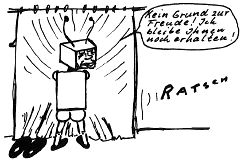

Nascom Journal |
September 1982 · Ausgabe 9 |
Dazu müssen als Hardware die Komponenten zur Verfugung stehen, die im folgenden Blockschaltbild wiedergegeben sind.
Der Computer stellt also über PIO die Zeilennummer ein (von 1 bis 156). Beim zweiten Halbbild wird der Zähler freigegeben und zählt mit jeder 2. Zeile rückwärts. Nach der eingestellten Anzahl wird ein Impuls ausgegeben (mit einem Monoflop auf 64 usec festgelegt, was etwa der Zeit entspricht, die man zum Einlesen einer Zeile benötigt). Dieser Impuls läßt einen Oszillator starten, der mithilfe eines Zählers ein RAM „hochzählt“, das die digitalisierten Bildpunkte einliest. (Aus dem Blockschaltbild ist nicht ersichtlich, daß der RAM- Zähler nach 256 Takten automatisch stoppt).
Der Rechner schaltet dann den Multiplexer (aus Gattern bestehend) auf den Auslesetakt um, den er selbst liefert. Nach dem Auslesen und Abspeichern des Zeileninhalts wird die Zeilennummer erhöht und der Multiplexer wieder auf Einlesetakt umgeschaltet. Die nächste Zeile kann eingelesen werden.
Wie bereits erwähnt, kann der Zeileninhalt in Grauwerten abgespeichert werden, wenn man die Analogspannung durch A/D-Wandler entsprechend umsetzt. Da mir aber mit einem Drucker bei entsprechender Auflösung und auch auf dem Bildschirm ohne dazu notwendige Hardwareerweiterung keine Möglichkeit gegeben ist, Grauwerte darzustellen, kann ich mir auch den Aufwand zur Speicherung sparen. Die Bildinformation soll also nur schwarz/weiß verarbeitet werden.
Die Digitalisierung der Zeileninhalte besteht also nur darin, daß mittels eines Komparators zwischen zwei Helligkeitswerten unterschieden wird. Ist der Punkt dunkler als der einstellbare Grenzwert, kippt der Komparator, und damit die gespeicherte Information, auf high. Ist er heller, wird ein low gespeichert. Dadurch entstehen sehr kontrastreiche Bilder, die vielleicht nicht nach jedermanns Geschmack sind. Wie weit man da Kompromisse eingehen muß, um Hardware- und Softwareaufwand in Grenzen zu halten, kann wohl nur im Versuch festgestellt werden.
wird fortgesetzt
Impulsfolge einer Kamera mit positivem Bildinhalt (weiß=positiv). Ein negativer Bildinhalt müßte z.B. durch einen Transistor invertiert werden. Bei meiner Kamera beträgt die Amplitude etwa 1 V.

| Seite 13 von 28 |
|---|